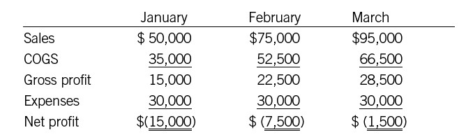

Profit ≠ Cash
(and You Need Both)
Why is profit not the same as cash coming in? Some reasons are pretty obvious: cash may be coming in from loans or from investors, and that cash isn’t going to show up on the income statement at all. But even operating cash flow, which we’ll explain in detail in chapter 17, is not at all the same as net profit. There are three essential reasons:
• Revenue is booked at sale. One reason is the fundamental fact that we explained in our discussion of the income statement. A sale is recorded whenever a company delivers a product or service. Ace Printing Company delivers $1,000 worth of brochures to a customer; Ace Printing Company records revenues of $1,000, and theoretically it could record a profit by subtracting its costs and expenses from that revenue. But no cash has changed hands, because Ace’s customer typically has thirty days or more to pay. Since profit starts with revenue, it always reflects customers’ promises to pay. Cash flow, by contrast, always reflects cash transactions.
• Expenses are matched to revenue. The purpose of the income statement is to tote up all the costs and expenses associated with generating revenue during a given time period. As we saw in part 2, however, those expenses may not be the ones that were actually paid during that time period. Some may have been paid for earlier (as with the start-up that had to pay for a year’s rent in advance). Most will be paid for later, when vendors’ bills come due. So the expenses on the income statement do not reflect cash going out. The cash flow statement, however, always measures cash in and out the door during a particular time period.
• Capital expenditures don’t count against profit. Remember the toolbox at the end of part 3? A capital expenditure doesn’t appear on the income statement when it occurs; only as the item depreciates is its cost charged against revenue. So a company can buy trucks, machinery, computer systems, and so on, and the expense will appear on the income statement only gradually, over the useful life of each item. Cash, of course, is another story: all those items often are paid for long before they have been fully depreciated, and the cash used to pay for them will be reflected in the cash flow statement.
You may be thinking that in the long run cash flow will pretty much track net profit. Accounts receivable will be collected, so sales will turn into cash. Accounts payable will be paid, so expenses will more or less even out from one time period to the next. And capital expenditures will be depreciated, so that over time the charges against revenue from depreciation will more or less equal the cash being spent on new assets. All this is true, to a degree, at least for a mature, well-managed company. But the difference between profit and cash can create all sorts of mischief in the meantime.
PROFIT WITHOUT CASH
We’ll illustrate this point by comparing two simple companies with two dramatically different profit and cash positions.
Sweet Dreams Bakery is a new cookies-and-cakes manufacturer that supplies specialty grocery stores. The founder has lined up orders based on her unique home-style recipes, and she’s ready to launch on January 1. We’ll assume she has $10,000 cash in the bank, and we’ll also assume that in the first three months her sales are $20,000, $30,000, and $45,000. Cost of goods sold is 60 percent of sales, and her monthly operating expenses are $10,000.
Just by eyeballing those numbers, you can see she’ll soon be making a profit. In fact, the simplified income statements for the first three months look like this:

A simplified cash flow statement, however, would tell a different story. Sweet Dreams Bakery has an agreement with its vendors to pay for the ingredients and other supplies it buys in thirty days. But those specialty groceries that the company sells to? They’re kind of precarious, and they take sixty days to pay their bills. So here’s what happens to Sweet Dreams’s cash situation:
• In January, Sweet Dreams collects nothing from its customers. At the end of the month, all it has is $20,000 in receivables from its sales. Luckily, it does not have to pay anything out for the ingredients it uses, since its vendors expect to be paid in thirty days. (We’ll assume that the COGS figure is all for ingredients, because the owner herself does all the baking.) But the company does have to pay expenses—rent, utilities, and so on. So all of the initial $10,000 in cash goes out the door to pay expenses, and Sweet Dreams is left with no cash in the bank.
• In February, Sweet Dreams still hasn’t collected anything. (Remember, the customers pay in sixty days). At the end of the month, it has $50,000 in receivables—January’s $20,000 plus February’s $30,000—but still no cash. Meanwhile, Sweet Dreams now has to pay for the ingredients and supplies for January ($12,000), and it has another month’s worth of expenses ($10,000). So it’s now in the hole by $22,000.
Can the owner turn this around? Surely, in March those rising profits will improve the cash picture! Alas, no.
• In March, Sweet Dreams finally collects on its January sales, so it has $20,000 in cash coming in the door, leaving it only $2,000 short against its end-of-February cash position. But now it has to pay for February’s COGS of $18,000 plus March’s expenses of $10,000. So at the end of March, it ends up $30,000 in the hole—a worse position than at the end of February.
What’s going on here? The answer is that Sweet Dreams is growing. Its sales increase every month, meaning that it must pay more each month for its ingredients. Eventually, its operating expenses will increase as well, as the owner has to hire more people. The other problem is the disparity between the fact that Sweet Dreams must pay its vendors in thirty days while waiting sixty days for receipts from its customers. In effect, it has to front the cash for thirty days—and as long as sales are increasing, it will never be able to catch up unless it finds additional sources of cash. As fictional and oversimplified as Sweet Dreams may be, this is precisely how profitable companies go out of business. It is one reason why so many small companies fail in their first year. They simply run out of cash.
CASH WITHOUT PROFIT
But now let’s look at another sort of profit/cash disparity.
Fine Apparel is another start-up. It sells expensive men’s clothing, and it’s located in a part of town frequented by businessmen and well-to-do tourists. Its sales for the first three months are $50,000, $75,000, and $95,000—again, a healthy growth trend. Its cost of goods sold is 70 percent of sales, and its monthly operating expenses are $30,000 (high rent!). For the sake of comparison, we’ll say it too begins the period with $10,000 in the bank.
So Fine Apparel’s income statement for these months looks like this:

It hasn’t yet turned the corner on profitability, though it is losing less money each month. Meanwhile, what does its cash picture look like? As a retailer, of course, it collects the money on each sale immediately. And we’ll assume that Fine Apparel was able to negotiate good terms with its vendors, paying them in sixty days.
• In January, it begins with $10,000 and adds $50,000 in cash sales. It doesn’t have to pay for any cost of goods sold yet, so the only cash out the door is that $30,000 in expenses. End-of-the-month bank balance: $30,000.
• In February, it adds $75,000 in cash sales and still doesn’t pay anything for cost of goods sold. So the month’s net cash after the $30,000 in expenses is $45,000. Now the bank balance is $75,000!
• In March, it adds $95,000 in cash sales, pays for January’s supplies ($35,000) and March’s expenses ($30,000). Net cash in for the month is $30,000, and the bank balance is now $105,000.
Cash-based businesses—retailers, restaurants, and so on—can thus get an equally skewed picture of their situation. In this case Fine Apparel’s bank balance is climbing every month even though the company is unprofitable. That’s fine for a while, and it will continue to be fine so long as the company holds down expenses so that it can turn the corner on profitability. But the owner has to be careful: if he’s lulled into thinking that his business is doing great and he can increase those expenses, he’s liable to continue on the unprofitable path. If he fails to attain profitability, eventually he will run out of cash.
Fine Apparel, too, has its real-world parallels. Every cash-based business, from tiny Main Street shops to giants such as Amazon.com and Dell, has the luxury of taking the customer’s money before it must pay for its costs and expenses. It enjoys the “float”—and if it is growing, that float will grow ever larger. But ultimately, the company must be profitable by the standards of the income statement; cash flow in the long run is no protection against unprofitability. In the apparel example, the losses on the books will eventually lead to negative cash flow; just as profits eventually lead to cash, losses eventually use up cash. It’s the timing of those cash flows that we are trying to understand here.
Understanding the difference between profit and cash is a key to increasing your financial intelligence. It is a foundational concept, one that many managers haven’t had an opportunity to learn. And it opens a whole new window of opportunity to ask questions and make smart decisions. For example:
• Finding the right kind of expertise. The two situations we described in this chapter require different skills. If a company is profitable but short on cash, then it needs financial expertise—someone capable of lining up additional financing. If a company has cash but is unprofitable, it needs operational expertise, meaning someone capable of bringing down costs or generating additional revenue without adding costs. So not only do financial statements tell you what is going on in the company, they also can tell you what kind of expertise you need to hire.
• Making good decisions about timing. Informed decisions on when to take an action can increase a company’s effectiveness. Take Setpoint as an example. When Joe isn’t out training people in business literacy, he is CFO of Setpoint, a company that builds factory-automation systems and other products. Managers at the company know that the first quarter of the year, when many orders for automation systems come in, is the most profitable for the business. But cash is always tight because Setpoint must pay out cash to buy components and pay contractors. The next quarter, Setpoint’s cash flow typically improves because receivables from the prior quarter are collected, but profits slow down. Setpoint managers have learned that it’s better to buy capital equipment for the business in the second quarter rather than the first, even though the second quarter is traditionally less profitable, just because there’s more cash available to pay for it.
The ultimate lesson here is that companies need both profit and cash. They are different, and a healthy business requires both.